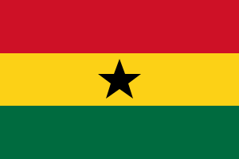

David Wilson
About Me
My name is David Wilson. I am a software developer and platforms engineer living in Accra, Ghana. I build web applications with Laravel, Vue, and PostgreSQL. Outside of work I lead a church choir, teach keyboard, and enjoy learning new technologies.
Accra, Ghana

Ghana is a West African country on the Gulf of Guinea. It was the first sub-Saharan African nation to gain independence, in 1957. Ghana is known for its friendly people, highlife music, cocoa, and the historic castles along its coast. Accra is its capital and largest city.